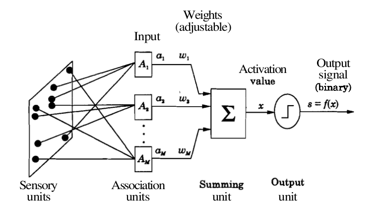
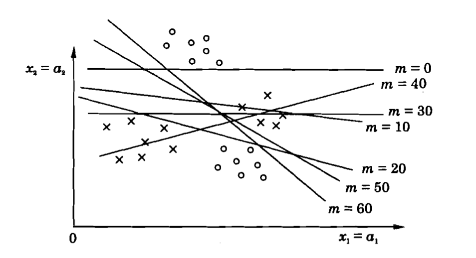

Computer Science & Engineering →Artificial Neural Networks Virtual Lab →List Of Experiments
Perceptron learning
Structure of two-layer feedforward neural network
A perceptron is a model of a biological neuron. The input to a perceptron is an M-dimensional vector, and each component/dimension of the vector is scaled by a weight. The sum of weighted inputs is computed and compared against a threshold. If the weighted sum exceeds the threshold, the output of the perceptron is '1'. Otherwise, the output of the perceptron is '-1' (or '0'). The output function of a perceptron is hard-limiting function. Thus the output of the perceptron is binary in nature. The following figure illustrates a perceptron.
|  |
where M = number of the elements in the input vector
A two-layer feedforward neural network with hard-limiting output function for the unit in the output layer can be used to perform the task of pattern classification. The number of units in the input layer is equal to the dimension of the input vectors. The units in the input layer are all linear units, and the input layer merely contributes to fan-out the input to each of the the output units. The output layer may consist of one or more perceptrons. The number of perceptron units in the output layer depends on the number of distinct classes in the pattern classification task. If there are only two classes, then one perceptron in the output layer is sufficient. Two perceptrons in the output layer can be used when dealing with four different classes in the pattern classification task. Here, we consider a two-class classification problem, and hence only one perceptron in the output layer.
Two-class pattern classification problem
Let us assume that one subset of input pattern vectors belong to one class, say, class \(A_1\), and the remaining subset of input pattern vectors belong to another class, say, class \(A_2\). Let a = \( (a_1, a_2,...,a_M) \) denote an input pattern vector. The objective in a pattern classification problem is to determine a set of weights w = \((w_1, w_2,...,w_M) \), such that the weighted sum
$$ \sum\limits_{i=1}^{M} w_i a_i \gt \theta, \qquad(1)$$ if \( a \) belongs to \(A_1\), and
$$ \sum\limits_{i=1}^{M} w_i a_i \le \theta, \qquad(2)$$ if \( a \) belongs to \(A_2\).
The dividing surface between the two classes is given by
$$ \sum\limits_{i=1}^{M} w_i a_i = \theta. \qquad(3)$$
This equation represents a linear hyperplane in the \( M \)-dimensional space. For two-dimensional input vectors, this equation represents a straight line. The solution of the classification problem involves determining the weights and the threshold value, such that the resulting hyperplane acts as a dividing surface between the two classes. This is achieved by means of a learning rule, which specifies the manner in which the weights and the threshold value need to be updated.
Perceptron learning law
The goal of perceptron learning law is to systematically adjust the weights and the threshold in such a manner that a dividing surface between two classes is obtained. The perceptron learning law for a two-class pattern classification problem may be stated as follows:
w\((m+1) = \)w\((m) + \eta \) a, if a \(\epsilon A_1 \) and w\(^{T}(m).\)a \( \le 0, \) and
w\((m+1) = \)w\((m) - \eta \) a, if a \(\epsilon A_2 \) and w\(^{T}(m).\)a \( \gt 0. \qquad(4)\)
Here \( m \) denotes the index of iteration, or time step. Also, a and w are augmented input and weight vectors. That is
a = \((-1, a_1,a_2,...,a_M)\), and
w = \((\theta, w_1,w_2,...,w_M).\)
The term \( \eta \) denotes the learning rate, and can be set to a small value (say, 0.1 to 0.5). The value of \( \eta \) can be varied in each learning step, although it is kept constant in perceptron learning. Note that the learning rule modifies the weights only when an input vector is misclassified. When an input vector is classified correctly, there is no adjustment of weights and the threshold. When presenting the input vectors to the network (any neural network in general), we use a term called epoch, which denotes one presentation of all the input pattern vectors to the network. To obtain suitable weights, the learning rule may need to be applied for more than one epoch, typically several epochs. After each epoch, it is verified whether the existing set of weights can correctly classify the input vectors. If so, then the process of updating the weights is terminated. Otherwise the process continues till a desired set of weights is obtained. Note that once a separating hypersurface is achieved, the weights are not modified.
Perceptron convergence theorem
This theorem states that the perceptron learning law converges to a final set of weight values in a finite number of steps, if the classes are linearly separable. The proof of this theorem first assumes that there exists a set of weights which can correctly classify the input vectors. Then, a bound is obtained on the number of steps used to arrive at the optimum set of weights. This can be illustrated by the figure below, where begining intially with a set of random weight, the decision boundary finally settles as a valid classifier in finite number of steps.
|  |